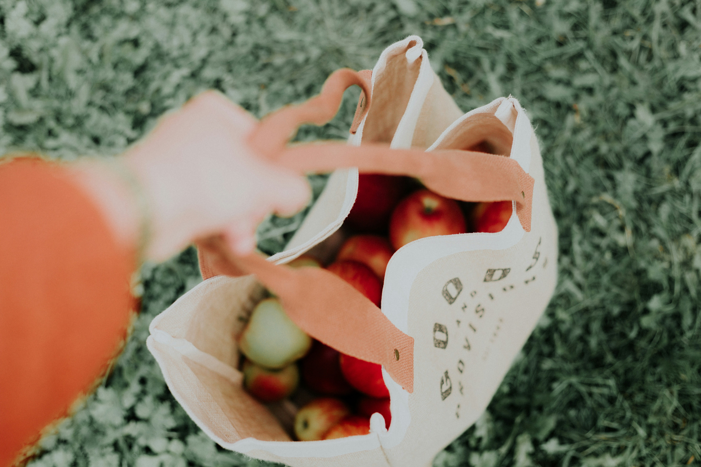
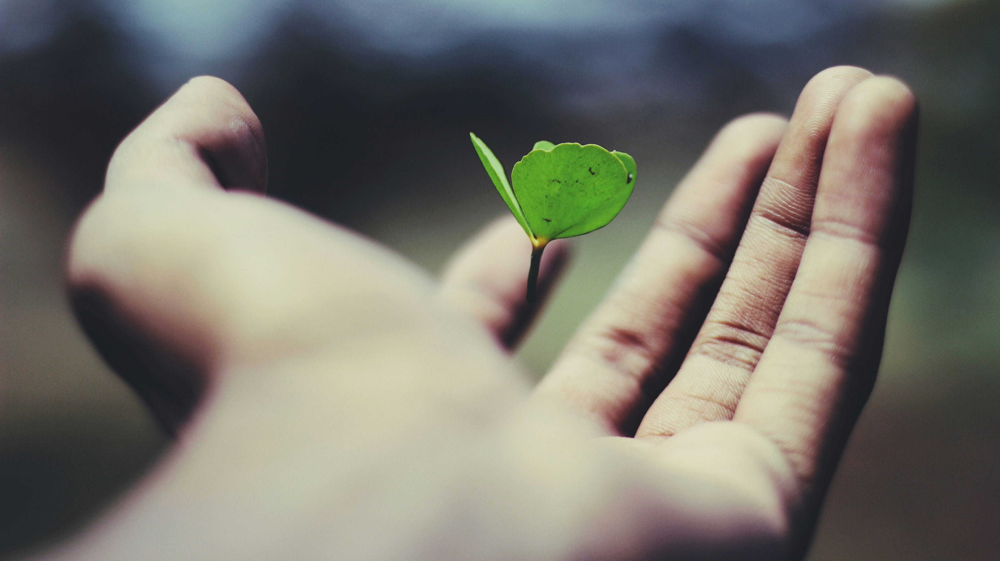
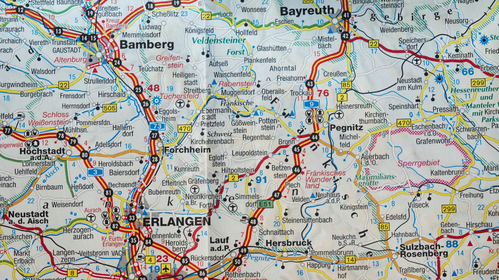

Go green without going broke.

Mission
91% of genz say they want to buy from more sustainable companies but don’t know where to start. We go over what the site stands for, who we made it for, and what we are hoping you get out of it! (Yes you) Remember to try to leave a positive impact on your community even if it is as small as volunteering. This page is volunteer run and any support it appreciated

Why it Matters
The average American throws away 81 pounds of clothing every year, and that’s just one piece of the problem. We break down the numbers behind the effects of climate change, waste, and why some neighbors are feeling the effects earlier than others

Search
The search page is the main feature of RootedLocal. you can use it to find sustainable local businesses in your area and zero waste shops. We work hard to make sure everything is actually accessible and affordable because the whole point is that this stuff should be available to everyone, not just people who can already afford to live sustainably